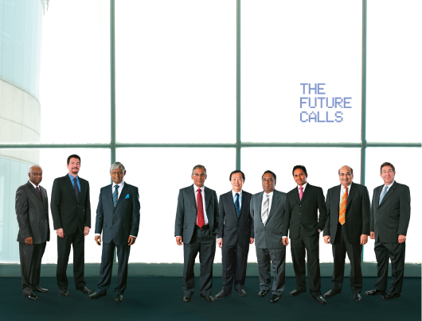
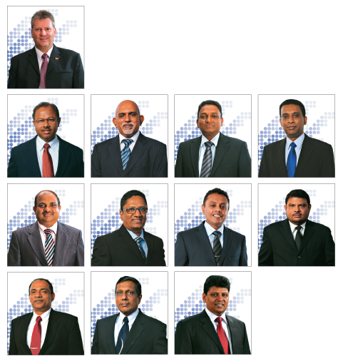
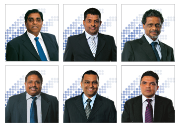

The Board of Directors

Left to Right
Mr. Jayantha Dharmadasa - Director
Mr. Jeffrey Jay Blatt - Director
Mr. Nimal Welgama - Chairman/Director
Mr. Dayananda Widanagamachchi - Director
Mr. Chan Chee Beng - Director
Mr. Kalinga Indatissa - Director
Mr. Shameendra Rajapaksa - Director
Mr. Sandip Das - Director
Mr. Lawrence Paratz - Director
Mr. Nimal Welgama
Chairman/Director
Mr. Nimal Welgama joined the Board of Sri Lanka Telecom PLC on 20th May 2010 and was appointed Chairman of the Board. He is also a Director/Chairman of Mobitel (Pvt) Ltd., SLT Publications (Pvt) Ltd., SLT Visioncom (Pvt) Ltd., SLT Manpower Solutions (Pvt) Ltd., SLT Hong Kong Ltd and Sky Network (Pvt) Ltd. and a director of Sri Lanka Telecom (Services) Ltd. Mr. Welgama is the CEO of the Upali Group of Companies and also serves as a member of the Monetary Board of the Central Bank of Sri Lanka.
Mr. Sandip Das
Director
Mr. Sandip Das was appointed to the Board of Sri Lanka Telecom PLC on 5th June 2008. He is also a member of the Board of Mobitel (Pvt) Ltd.
He is the Chief Executive Officer of Maxis Communications Berhad. He also serves as Chief Executive Officer and Executive Director on the board of Maxis Berhad, Malaysia and as a Director on the board of Aircel, India. In addition, he serves the board of Bridge Mobile Pte Ltd, a strategic alliance of regional telecommunication providers. He was listed as one of the 100 most powerful people in the telecoms industry worldwide in Global Telecoms Business for two years running in the 2011 and 2010 GTB Power100 list.
Sandip has more than 33 years of work experience in the consumer durable, automobile and telecommunications industries. Prior to Maxis, he was Deputy Managing Director and a Director on the Board of Hutchison Essar Limited (now known as Vodafone Essar Limited, India). He joined Hutchison Essar, then known as Hutchison Max Telecom, and started that company's operations in India with its paging business in 1994. Prior to that, he worked with Al Futtaim Motors, the Toyota franchise in Dubai, UAE, and 10 years with Indian durable giant Usha International.
He holds a Masters of Business Administration degree from the Faculty of Management Studies, University of Delhi, and a Bachelor's degree in Mechanical Engineering from the Regional Engineering College (now the National Institute of Technology), Rourkela, India.
Mr. Chan Chee Beng
Director
Mr. Chan Chee Beng was appointed to the Board of Directors on the 05th June 2008 and subsequently to the Board of Mobitel (Pvt) Ltd. Mr. Chan, aged 56, is a Malaysian National. He also serves as a member of the Audit Committee.
He is presently an Executive Director of Usaha Tegas Group Sdn. Bhd. ("Usaha Tegas") and serves on the Boards of several other companies in which Usaha Tegas has significant interest such as Maxis Berhad and Bumi Armada Berhad (both listed on Bursa Malaysia Securities Berhad), Maxis Communication Berhad, Binariang GSM Sdn. Bhd., Measat Global Berhad and Aircel Limited.
Mr. Chan holds a degree in Economics and Accounting from the University of Newcastle-upon-Tyne, United Kingdom and is a fellow of the Institute of Chartered Accountants of England and Wales.
Mr. Jeffrey Jay Blatt
Director
Mr. Jeffrey Jay Blatt was appointed to the Board of Sri Lanka Telecom PLC on 5 June 2008, and sits on the Senior Tender Board and the Technology Sub Committee. He is also a Director of SLT Visioncom (Pvt) Ltd, and SLT Hong Kong Ltd. Mr. Blatt acts as Special Counsel to Astro All Asia Networks PLC, and Usaha Tegas Sdn. Bhd., in Malaysia, and is Counsel at the law firm of Tilleke & Gibbins in Thailand leading its Telecom, Media and Communications practice.
Prior to his current positions, he was the Senior Vice President of Business Affairs and General Counsel, at Astro and the Group General Counsel of Usaha Tegas Sdn. Bhd. ("UT Group").
Before moving to Malaysia, he was a partner in the nationally recognized law firms of Irell & Manella LLP, and Blakely, Sokoloff, Taylor and Zafman, in Los Angeles, California, and represented technology companies including Apple Computer, Sun Microsystems, Intel, Broadcom, and Sony Electronics. He also represented entertainment companies in multimedia and special effects matters including Sony Pictures Entertainment and Light Storm Entertainment.
Mr. Blatt attended the Lewis and Clark Law School, Oregon, USA and holds a Juris Doctor (J.D.) degree, cum laude, as well a Bachelor of Science (B.S.) degree in Engineering from the University of California, Los Angeles (UCLA) School of Engineering and Applied Science, and a Master of Science (M.S.) degree with Distinction, from Tiffin University, Ohio. He is a member of the California and United States Federal Bars, and is a registered United States Patent Attorney.
Mr. Dayananda Widanagamachchi
Director
Mr. D. Widanagamachi was appointed to the Board on 5th July 2010, and sits on the Audit Committee. He is a senior public servant with over thirty years experience at various public institutions. He currently holds the position of Deputy Secretary to the Treasury at the Ministry of Finance and Planning.
He has served on the Boards of several public enterprises, Airports Aviation Services (Sri Lanka) Ltd. BCC (Lanka) Ltd, Sri Lanka Transport Medical Institute, National Water Supply and Drainage Board, CWE and Lak Sathosa Ltd, to name a few.
Mr. Widanagamachchi possesses a Bachelor of Science Degree in Business Administration from the University of Sri Jayawardhanapura. He has also obtained Postgraduate Diplomas in Public Administration from the Postgraduate Institute of Management, Colombo and Public Financial Management from the Sri Lanka Institute of Development Administration. He has undergone extensive training at overseas and local Institutes.
Mr. Shameendra Rajapaksa
Director
Mr. Shameendra Rajapaksa joined the Board of Sri Lankan Telecom PLC on the 26th May 2010, and serves on the Senior Tender Board and the Technology Sub Committee. He also serves as a Director of SLT Publications (Pvt) Ltd and SLT Hong Kong Ltd. Mr. Rajapaksa is a Director of Sri Lankan Airlines Ltd and is the Private Secretary to the Minister of Finance & Planning.
He had served as a Director of Sri Lanka Ports Authority and as the Private Secretary to the Minister of Ports & Aviation. His previous professional experience includes Head of Engineering Services at S2 Technologies Inc, Director of Development at Leads to Wealth Inc, Engineer at Sun Microsystems Inc and Software Team Lead at NASA ISS Earthkam Program, all based in California, USA.
Mr. Rajapaksa holds a Bachelor of Science degree in Computer Engineering from the University of California, San Diego (UCSD). He is a member of Institute of Electrical and Electronics Engineers (IEEE) and is an inducted member of Phi Theta Kappa, an International Honours Society.
Mr. Jayantha Dharmadasa
Director
Mr. Jayantha Dharmadasa is a business personality with over 35 years experience in Executive Business Management and 25 years in Health Care Industry. Having completed his Secondary Education at St. Thomas' College, he joined the family business Conglomerate Nawaloka Group of Companies which was founded in 1942.
Mr. Dharmadasa is a fellow Member of the Institute of Certified Professional Managers (FCPM). He was appointed to the Board of Sri Lanka Telecom PLC as an Independent Non- Executive Director with effect from 26th May 2010. He also serves as the Director of SLT Visioncom (Pvt) Ltd, SLT Manpower Solutions (Pvt) Ltd and NAITA.
Mr. Dharmadasa currently serves as the Chairman of Nawaloka Holdings in addition to heading the following companies: Nawaloka Hospitals PLC, New Ashford International (Pvt) Ltd, Concord Ventures Export Lanka Ltd., Sasiri Polysacks (Pvt) Ltd, Nawakrama (Pvt) Ltd, Nawaloka Metropolis Clinical Laboratories (Pvt) Ltd, Nawaloka Medical Centers (Pvt) Ltd, Nawaloka Construction Co. Ltd, Nawaloka Polysacks, Sharjah, Ceyoka (Pvt) Ltd, Nawaloka Trading Co. Ltd, Koala (Pvt) Ltd, Sahas Wear (Pvt) Ltd, Nawaloka ABC Petroleum (Pvt) Ltd, Nawaloka Aviation (Pvt) Ltd and Melvin Wire Nail Industries
(Pvt) Ltd.
He was the former Chairman National Film Corporation, Sri Lanka Cricket and Past President - Asian Cricket Council. He is the Chairman – Outstanding Song Creators' Association (OSCA) and Cinestar Foundation.
Mr. Kalinga Indatissa
Director
Mr. Kalinga Indatissa joined Board of Sri Lanka Telecom PLC on 26th May 2010 as an Independent Non- Executive Director and serves on the Audit Committee and the Senior Tender Board. He is also a Director of the SLT Manpower Solutions (Pvt) Ltd.
Mr. Indatissa is an attorney- at law of the Supreme Court of Sri Lanka and counts 24 years of practice at the Bar and currently serves as the head of Legal Firm consisting of 20-25 lawyers.
He was also a Director of the Sri Lanka Foundation and has been appointed as the Competent Authority reviewing underutilized assets and enterprises. He has also served as a Director at the Employees Trust Fund Board and Lecturer at Sri Lanka Law College and also as a visiting lecturer of Sri Lanka Hotel School and Sri Lanka Police Higher Training Institute. He served as a member of the Interim Committee of the Sri Lanka Cricket Board from 2010-2011.
Earlier he held the position of an Examiner and Lecturer in Civil Procedure, Law of Evidence and Criminal Law at the Sri Lanka Law College. He was a tutor in Criminal Law, Criminal Procedure, Administrative Law, Law of Evidence and Civil Procedure, Sri Lanka Law College.
He has also penned numerous books on the laws pertaining to computer crime, civil procedure and criminal law in Sri Lanka.
Mr. Lawrence Paratz
Director
Mr. Lawrence Paratz was appointed to the board of Sri Lanka Telecom PLC as an Independent Non- Executive Director with effect from 26th May 2010.
Mr. Lawrence Paratz holds an M. Sc. (Telecommunication Systems) with Distinction, and was awarded the Philips prize from Essex University, and an M. Eng. Sc. from the University of Queensland. He is a Fellow of Engineers Australia (FIEAust) and an alumnus of the Stanford University Executive Development Program. He also holds Bachelor's Degrees in Science and Engineering (Honours). In 2011, he was elected as a Fellow of the Australian Academy of Technological Sciences and Engineering (ATSE).
Mr. Paratz has more than 30 years experience in all facets of the telecommunication industries including mobile, fixed, broadband, satellite and international networks both domestically and internationally. This includes capital and infrastructure development, operations, sales, customer service and regulatory issues. As a Director and Chief Executive of Acacia Australia Pty Ltd, he was responsible for development of an integrated proposal for delivery of national broadband communication for Australia.
He is a Director of Maxis Communication Berhad, Chairman of the Technology Committee of the Board and a former senior executive of Telstra Corporation.
Mr. Paratz has had executive responsibility for multi- billion dollar programs and integrations including network transformations and deployments across multiple technologies, with extensive experience in regional and rural communications. He previously served as a member of the Board of the Australian Government's Internet Assistance Program. He has been an invited speaker at the Australian Health Informatics Conference, and the Australian Academy of Technological Sciences and Engineering.
He was formerly Chairman of the On-Trac@Peter Mac Adolescent and Young Adult Cancer Programme, and has been involved in a number of initiatives in e-health.
Senior Management

Left to Right
Greg Young - Chief Executive Officer
Priyantha Perera - Chief Administration Officer
S. K. Lal Ranjith - Chief Corporate Officer
K. A. Kiththi Perera - Chief Enterprise & Wholesale Officer
Shiron Gooneratne - Chief Financial Officer
Jayantha Thilakarathne - Chief Human Resource Officer
D. W. R. Wijeweera - Chief Information Officer
P Roshan Kaluarachchi - Chief Marketing Officer
M. B. P. Fernandez - Chief Network Officer
Chinthaka C.Wijesuriya - Chief Regional Officer
Mohan Padmaperuma - Chief Transformation and Development Officer
Ajantha Seneviratne - Chief Business Strategies Officer
Senior Management Profiles
Greg Youngs
Chief Executive Officer, Sri Lanka Telecom
Joined in February 2009 as CEO swith a remit to transform this business into a customer centric, market focused business, striving for customer service excellence. With over 26 years in the telecommunications industry, Greg Young has an impressive range of both commercial and technical experience developed through working for world class operators and suppliers, including Qualcomm, Tata Teleservices India, Telstra Corporation and Philips Australia. He holds a Bachelor of Electrical and Electronic Engineering (Distinction) from Swinburne University, Australia. A well known telecommunications and wireless industry leader, Greg Young has served on industry associations - including 4 years as the President and 10 years as a board member of the global CDMA Development Group (CDG).
Priyantha Perera
Chief Administration Officer
Joined SLT in 1982, armed with a BSc from the University of Moratuwa in Electronics and Telecommunications. He is a Chartered Engineer with a Post Graduate Diploma in Marketing from the CIM (UK) and a Fellow and a Past Council Member of The Institution of Engineers, Sri Lanka, a member of IET (UK) and CIM (UK), and also a Competent Toastmaster.
He has experience in areas such as regional management, project management, technology strategy formulation and execution, technical operation, technical evaluation, marketing management and company transformation. He has led special company-wide cross-functional teams on 'productivity improvement' and 'paradigm shift' in SLT such as 5S and Breakthrough Thinking.
S. K. Lal Ranjith
Chief Corporate Officer
Joined SLT in 1984 as an Engineer. He holds a BSc (1983) in Electronics and Communication from the University of Moratuwa and has read for an MBA from the PIM of the University of Sri Jayawardanepura. He has also completed a Post Graduate Diploma in Marketing from the CIM (UK) and is a Chartered Marketer cum Chartered Engineer with membership of The Institution of Engineers, Sri Lanka and CIM (UK). He is also a Toastmaster.
K. A. Kiththi Perera
Chief Enterprise & Wholesale Officer
Joined SLT in 1994. He holds a MEng from University of Moratuwa in Electronics and Telecommunications Engineering and a Chartered Engineer of the Institute of Electrical Engineers and Engineering Council (UK). He has experience in International Transmission Systems, Submarine Cable Systems, Data and IP Networking and Project Management. He has experience in dealing with Enterprise and Government customers over the last 10 years and was instrumental in introducing Metro Ethernet Technology to
Sri Lanka. He has provided voice-data integrated enterprise solutions connected with high speed resilient connectivity services to many customers.
Shiron Gooneratne
Chief Financial Officer
Joined SLT in 2009. He is an Associate Member of the Institute of Chartered Accountants of Sri Lanka and a Member of the Institute of Certified Management Accountants, Australia and holds an MBA from the University of Leicester, UK. He has held senior finance positions both locally and overseas, including the position of Finance Director / Member of the Board of Directors of a leading multinational company operating in Sri Lanka.
Jayantha Thilakarathne
Chief Human Resource Officer
Joined SLT in 2011. He is an attorney-at law and obtained LL.B Degree from University of Colombo. Also he holds a Master of Public Management (HR) and has 22 years of experience in the field of HR. He has held senior HR positions in both national and multinational companies. Before he joined SLT, he worked as Group General Manager-HR & Admin in Maliban Biscuit/Milk/Wonder pack Manufactories (Pvt) Ltd. He has wide exposure to the fields of Human Resources, Personnel Administration, and Legal.
D. W. R. Wijeweera
Chief Information Officer
Joined SLT in 1982 and served as Head of the Billing Division in 2001 and became CIO of SLT in 2005. He is a member of The Institution of Engineers, Sri Lanka (C.Eng.), IIESL, IET (UK) and CSSL. He has been engaged in major IT projects to provide the strategic IT road map for SLT. As Programme Manager he implemented the Integrated OSS and BSS system.
P Roshan Kaluarachchi
Chief Marketing Officer
Joined SLT in 2010. He is a Marketing Professional with over 19 years of experience in the entire spectrum of Marketing, Communication, Product and Brand Management with exposure to the FMCG, Consumer Durables and Telecom Services Sectors Both Multinational and Local Organizations in Sri Lanka. Prior to joining SLT, he served as General Manager - Marketing at Mobitel where his aggressive strategic marketing leadership contributed towards the company becoming the second largest mobile operator within a short span of 3 years. The launch of SLT's new Proposition, "One Country. One Voice" and rationalization of Product Brands under the umbrella of SLT were a few of many mile stones achieved in 2011 under his marketing leadership.
M. B. P. Fernandez
Chief Network Officer
Joined SLT in 1991. He has a BSc Eng in Electronics and Telecommunications from the University of Moratuwa and an MBA from the University of Sri Jayewardenepura. He is a Chartered Engineer and a Fellow Member of the Institute of Engineers,
Sri Lanka with 23 years of experience in operations, maintenance, project management, customer service and marketing. He also serves as Director of Sri Lanka Telecom (Services) Ltd. and an IPM Resource Person.
Chinthaka C.Wijesuriya
Chief Regional Officer
Joined SLT in 1984 and served as Regional Head in 2001 and became Chief Regional Officer of SLT in 2010. He obtained the Graduate membership of Radio and Electronic Engineers (London, UK) and became a Chartered Engineer of the Institution of Electrical Engineers (London, UK). He is a Member of the Association of Professional Engineers Scientists and Managers Associations in Australia and holds an MBA (Technical Management) from La Trobe University of Australia. He has wide experience in the telecommunications industry, in areas such as operations, maintenance, sales, marketing, customer service, quality management and project management.
Mohan Padmaperuma
Chief Transformation and Development Officer
Joined SLT as an Engineer in 1984. BSc in Electronics and Telecommunication from University of Moratuwa (1983). He is a Chartered Engineer and a Fellow member of the Institution of Engineers, Sri Lanka. He brings with him experience in the Emirates Telecommunication Company from 1989 – 1991.
Ajantha Seneviratne
Chief Business Strategies Officer
Joined SLT in 1993. He holds a BSc. (1987) in Electronics and Telecommunications from the University of Moratuwa and has obtained the Post Graduate Diploma in Industrial Engineering from OUSL. He has also read for an MBA from the University of Sri Jayawardanepura. He is a Chartered Engineer and is a member of The Institution of Engineers, Sri Lanka. He brings with him over ten years of marketing experience.
Subsidiary CEOs

Left to Right
Lalith De Silva - Chief Executive Officer, Mobitel (Pvt) Limited
Prasanna Perera - Chief Executive Officer, Sri Lanka Telecom Services
Tilak De Silva - Chief Executive Officer, SLT Hong Kong Limited
Malraj Balapitiya - Chief Executive Officer, SLT Publications (Pvt.) Ltd and SLT VisionCom (Pvt) Ltd.
Ranjith Ganganath Rubasinghe - Chief Executive Officer, SLT Manpower Solutions (Pvt) Ltd.
Mahinda B. Herath - Chief Executive Officer, Sky Network Private Limited.
Subsidiary CEOs Profiles
Lalith De Silva
Chief Executive Officer, Mobitel (Pvt) Limited
Lalith De Silva is the Chief Executive Officer of Mobitel Pvt Ltd, which is a wholly owned subsidiary of Sri Lanka Telecom, the incumbent fixed line operator in the country. Prior to his current tenure as the CEO, he also served as the first CEO to assume duty following the acquisition of the company by Sri Lanka Telecom in 2002. Having guided the Company in the establishment of the GSM network, he was instrumental in laying the foundation for the company's rapid technological and market growth. He started his engineering career at IBM initially in Sri Lanka and then in Australia and is now recognised as a global ICT and Program Management Specialist. De Silva brings with him a vast bank of experience gained as an Advisor to SLT, a Board Director/Consultant at Sri Lankan Airlines and Senior Advisor at Saudi Telecom.
Prasanna Perera
Chief Executive Officer, Sri Lanka Telecom Services
Prasanna Perera joined Sri Lanka Telecom Services in 2003 as Head of Marketing and was appointed CEO of the company subsequently. He is a qualified marketer and has a Master of Business Management from University of Lincoln, UK. Prior to moving to Sri Lanka Telecom Services, he served in several senior managerial positions at the Metropolitan Group, EDS Lanka and Lanka Communication Services. During his career spanning 22 years, Prasanna worked in the ICT industry with his exposure ranging from software development to communication companies.
Tilak De Silva
Chief Executive Officer, SLT Hong Kong Limited
Tilak De Silva joined SLT in 1984 and has more than 27 years of experience in the IT and communication fields. He has held the key positions of Head of IT, Chief Global Officer and Chief Network Officer at SLT. Mr. De Silva holds the Degree of Bachelor of Science of Engineering (Specialising in Electronics & Telecommunications Engineering) from University of Moratuwa and the Degree of Master of Science in Data Communication from Brunel University U.K. He is a Chartered Engineer of Sri Lanka as well as U.K and a Chartered IT Professional of U.K. He serves as the President – Elect of Institution of Engineers Sri Lanka. He is a Fellow Member of IET - UK, Member of BCS –UK and Member of IEEE – USA.
Malraj Balapitiya
Chief Executive Officer, SLT Publications (Pvt.) Ltd & SLT Visioncom (Pvt) Ltd.
Malraj Balapitiya is a professionally qualified Chartered Engineer and a Fellow Member of the Institute of Engineers of Sri Lanka. He counts over 28 years of work experience at various levels of the SLT Administration and has swiftly climbed the corporate ladder, starting as a Technical Officer and then holding positions such as Regional Telecom Engineer, Head of the Province and General Manager.
He has been able to transform the locally established Rainbow Pages to create a reputed brand that competes with international brands in the same category. Keeping national commitments in mind, he has established a common platform to extend directory services to customers of other operators via various media such as CD, Web, WAP e Directory etc.
Ranjith Ganganath Rubasinghe
Chief Executive Officer, SLT Manpower Solutions (Pvt) Ltd.
Joined SLT as an Engineer in 2001. He holds a BSc Engineering in Electrical and Electronics, a Postgraduate Diploma in Engineering and an MBA. He is a Chartered Engineer, Representative Fellow of the Council and Chairman of the Young Members' Section and Chairman of Electrical & Electronic Engineering Sectional Committee of IESL.
Rubasinghe has led the organisation to achieve ISO 9001:2008 in 2010 after just 2 years of its inception, and the Asian Leadership award for Best in Recruitment & Consulting in 2011. He was among the key members that headed the transformation of SLT's Directory Services under the new brand 'SLT Rainbow pages' to make it competitive with global brands in the same category.
The winner of the 'HR LEADERSHIP AWARD' at Global HR Excellence Awards 2010, Rubasinghe holds memberships of all three premier professional bodies of the country; Fellow Member - IESL, Associate Member - IPM and a Certified Member - SLIM.
Mahinda B. Herath
Chief Executive Officer, Sky Network Private Limited.
Mahinda B. Herath joined SLT in 1984. He is a Chartered Engineer and holds a Degree in Engineering from the University of Moratuwa and a Masters in Industrial Mathematics from the University of Sri Jayawardenapura. His multi-disciplinary qualifications include certifications in Telecommunication Regulation from Commonwealth Telecommunications Organisation (CTO), Australian Communication & Media Authority (ACMA) and the University of Florida. He has also been involved in the activities of ITU study groups, Sri Lanka Association for the Advancement of Science (SLAAS) and the International Development Research Centre (IDRC), with several research and study papers and a book chapter (in the publication "ICT Infrastructure in Emerging Asia – Policy and Regulatory Roadblocks") to his credit.